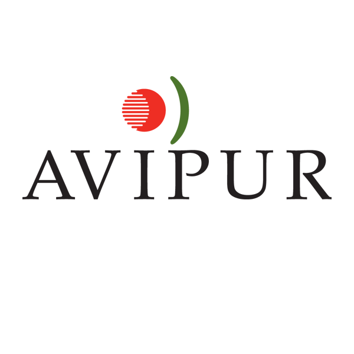
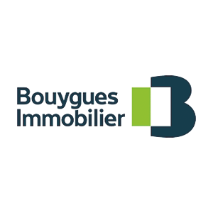
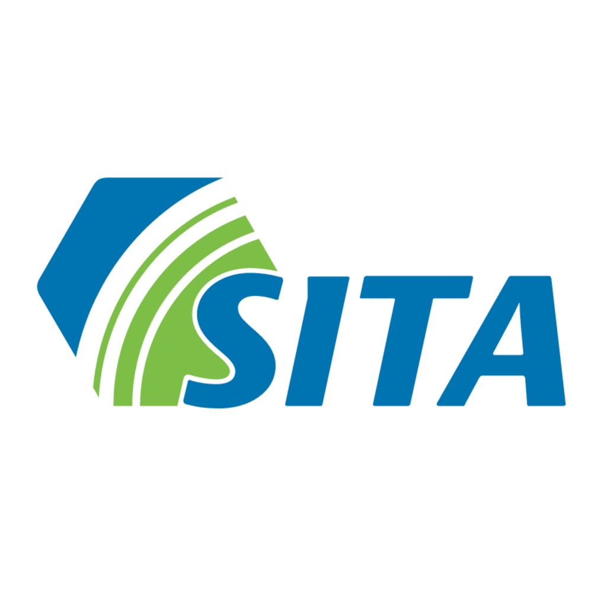

Expériences assistanat
Assistante Grands Comptes
De oct. 2013 à juin 2014
Groupe AVIPUR - 36 agences
Sous la responsabilité directe de la Directrice Grands Comptes qui venait de prendre ses fonctions, nous avons dû :
Rédaction et mise en page du mémoire technique,
Mise à jour et refonte des documents commerciaux,
Mise en place de procédures intra lors de nouveaux marchés
Constitution des dossiers d’appel d’offre,
Relation clientèle, Reporting client, Facturation.
Assistante projet
De nov. 2007 à août 2008
Quartier Issy Val de Seine
Dans le cadre de la création du quartier d’affaires Issy Val de Seine, j’ai intégré l’équipe projet, pour accompagner mon Directeur sur le Projet Tour Farmer.
Tâches courantes :

Gestion courrier, classement, archivage, photocopies, reliures,
Gestion d’agenda, organisation de réunions,
Gestion des signatures de marché, par les sous-traitants,
Organisation d’évènements.
Mise en lumière de la Tour Mozart,
Pose de la première pierre de la Tour Eqwater.
Assistante d'exploitation
De mars à novembre 2005
SITA IDF - 93 salariés
Dans le cadre de la reprise en gestion du site, un fort taux d’absences non justifiées était recensé.
Recenser les absences des 93 salariés sur 7 mois, et préparer un courrier personnalisé
Traiter et transmettre des éléments RH,
Interface avec l’agence d’intérim.
Organiser l’enlèvement des matières.
La rénovation de la chaine de tri entreprise avait pour objectif d’augmenter la productivité, permettant de supprimer l’équipe de nuit, et d’améliorer les conditions de travail des trieurs.
Suivi administratif du chantier,
Interface entre les intervenants et nos ingénieurs.
1
2
3